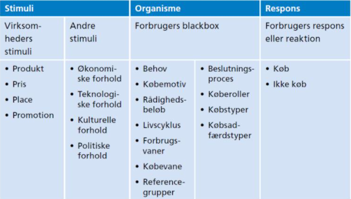
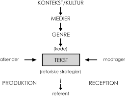

Morten's undervisning
1. semester
Kommunikation
Kommunikation er nøglen til alt kontakt med omverdenen.
Hvad er Kommunikation
Kommunikation er en række af forskellige ting, som sammen bliver til det vi afsender.
- Det vi siger og gør
- Det vi ikke siger og ikke gør
- Dem vi siger det til
- Vores perception
Kongruent
Kongruent kommunikation, er når kommunikation er i overensstemmelse.
Dette betyder at det er kommunikation hvor f.eks. kropssprog og ordvalg matcher.
Inkongruent
inkongruent kommunikation, er når kommunikation ikke er i overensstemmelse.
Dette betyder at det er kommunikation hvor f.eks. kropssprog og ordvalg ikke matcher.
Synkron kommunikation
Synkron kommunikation, er når kommunikationen forgår fra begge parter, på samme tid.
Dette kunne f.eks. være 2 personer, der snakker sammen.
Asynkron kommunikation
Asynkron kommunikation, betyder at kommunikationen forgår skrifteligt, men ikke på samme tid.
Dette kunne f.eks. være en E-mail, hvor der ikke nødvendigvis er direkte kommunikation
De 5 Grundantagelser
- Man kan ikke ikke-kommunikere
- Enhver kommunikation består af to dele: selve indholdet og oplysninger om det indbyrdes forhold.
- Den måde, vi udtrykker os på, og den måde, vi tolker hinandens kommunikation på, afhænger også af det forhold vi har til hinanden.
- Mennesker kommunikerer både med en digital kode og en analog kode
- Kommunikationsudveksling er enten symmetrisk eller asymmetrisk afhængigt af, om den hviler på lighed eller forskel i magt.
Digital kode
Er hvad der siges.
Analog kode
Hvordan det siges.
Kommunikations paradigmer
Et paradigme, er en måde at se verdenen på, altså et verdenssyn.
Samfundsvidenskabelige paradigme
Det samfundsvidenskabelige paradigme, har fokus på at afsenderen kan få et budskab ud.
Dette er også det vi kalder for Transmission.
Samfundsvidenskabelige modeller
Der findes nogen forskellige modeller, til hvordan man kan lave kommunikation, med det samfundsvidenskabelige paradigme.
- Laswells formel

- S-R/S-O-R model
- Kotlers model for markedskommunikation

Humanistiske paradigme
Det humanistiske paradigme, har i modsæt til det samfundsvidenskabelige fokus på modtageren.
Der er fokus på at afsender og modtager sammen bestemmer budskabet. Det kan også kendes på at være en dialog
Humanistiske modeller
Der findes nogen forskellige modeller, til hvordan man kan lave kommunikation, med det humanistiske paradigme.
- IMK modellen 
- Thorlacius’ kommunikationsmodel

Tekstproduktion
Vi bruger tekster til at hjælpe med at komme ud med vores budskab, det gøres bedst ved hjælp af følgende råd.
Medietyper
Dette er de forskellige medier vi kommer til at skrive til.
Webtekster
Webtekster gælder om at have interaktion, brugeroplevese og give en oplevese til den travle læser.
- En god webteksthjælper altid sin læser videre.
- En god webtekst videreformidlerikke bare en historie
- En god webtekst hjælper læseren med attræffe beslutninger
- En god webtekst tænker iSEO fra start til slut
Sociale medietekster
På de sociale medier, er det svært at opsætte regler og rammer for hvad man skal gøre.
Her gælder det om at arbejde inden for de rammer der er på forskellige sociale medier.
Dette kan være ved at bruge den lingo der bliver brugt på platformen.
Nyhedskriterier
Nyhedskriterierne er dem vi bruge, for at kunne opnå det hurtige blikfang.
Væsentlighed
Noget der har grundlæggende betydning eller konsekvens for mange mennesker.
Sensation
Noget der fascinerer eller chokerer. Ofte de små, skæve historier.
Konflikt
Når sager eller personer er på kollisionskurs.
--Identifikation
Noget som læseren kan genkende sig selv i.
Aktualitet
noget der er oppe i tiden. Historien må gerne udspringe af stof som i forvejen cirkulerer i andre medier.
21 SPROGLIGE DØDSSYNDER
- At glemme nutids-r
- At skrive sammensatte navneord i to ord
- At holde fast i forældede staveformer
- At skrive ’jeres’ og andre stedord med stort
- At sætte komma foran ’navnemåde-at’
- At sætte komma efter hilsner
- At bruge apostrof til at bøje de fremmedord, der skal bøjes helt almindeligt
- At forbryde sig mod de fundamentale regler for en punktopstilling
- At skrive ligge, når det burde være lægge – og omvendt
- At bruge apostrof ved almindeligt ejefald
- At skrive almindelige titler og stillingsbetegnelser med stort
- At skrive synes, når det burde være syntes – og omvendt
- At sætte bindestreg, når det skal være tankestreg
- At bruge endelsen ’ie’, når det burde være ’um’
- At bytte rundt på ’nogle’ og ’nogen’
- At tage fejl af endelserne ’–ende’ og ’–ene’
- At bruge ’hans’ i stedet for ’sin’
- At blande ’for’ og ’får’ sammen
- At blande ’og’ og ’at’ sammen
- At bruge fuge-s forkert
- At glemme følgende hjælpemidler
Metode
Metoder er forskellige måder vi bruger til at opnå de informationer vi ønsker.